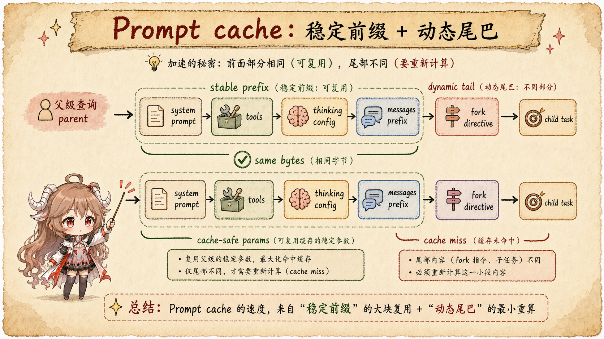

Claude Code Source Notes
Claude Code Source Notes
This is the English route map for the Claude Code source-reading series. The full long-form articles are currently published in Chinese; each card below links to the corresponding article.
The navigation and language switch are intentionally stable across the series. Use the Chinese switch to open the full Chinese index, or open any card to read the source-grounded article.
 Part I
Follow One Task Through the Claude Code Runtime
Part I
Follow One Task Through the Claude Code Runtime
Start with the runtime route: CLI, REPL, queue, query loop, model stream, tool gates, transcript, and resume.
 Part II
Context Is Not Just a Summary
Part II
Context Is Not Just a Summary
Follow model-visible context, microcompact, auto compact, API projection, and recovery boundaries.
 Part III
Tools Are Runtime Contracts
Part III
Tools Are Runtime Contracts
Read how tool_use becomes validated, permissioned, scheduled local work, then returns as tool_result.
 Part IV
Permissions Are a Side-Effect Brake
Part IV
Permissions Are a Side-Effect Brake
Track allow, deny, ask, hooks, permission requests, and denied tool results through the runtime.
 Part V
Commands, Skills, and MCP
Part V
Commands, Skills, and MCP
See how extension surfaces enter the current command table and tool pool.
 Part VI
Subagents Are Isolated Tool Contexts
Part VI
Subagents Are Isolated Tool Contexts
Compare ordinary subagents with fork paths that preserve parent cache prefixes.
 Part VII
Hooks Are Runtime Gates
Part VII
Hooks Are Runtime Gates
Place prompt, tool, stop, compact, and session hooks back into the turn lifecycle.
 Part VIII
Resume Rebuilds Runtime State
Part VIII
Resume Rebuilds Runtime State
Separate transcript loading from session state, worktree, agent, and content replacement recovery.

Part IX Prompt Cache Is Request-Shape DisciplineRead how cache_control, stable prefixes, fork suffixes, microcompact, and break detection fit together.